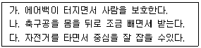
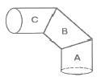
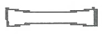

자동차차체수리기능사 (2014-10-11 기출문제)
1과목: 자동차공학
1. 운전 중 파워 윈도우 스위치 작동으로 인해 발생되는 위험성(어린이 장난 등)을 방지하기 위해서 사용되는 스위치는?
- 파워 윈도우 메인 스위치
- 운전석 뒤 파워 윈도우 스위치
- 승객석 뒤 파워 윈도우 스위치
- 파워 윈도우 록 스위치
(정답률: 91%)

2. 공작물의 표면부를 경화시키는 방법이 아닌 것은?
- 침탄법
- 정화법
- 표면 웅칭
- 어닐링
(정답률: 75%)
3. 높은 곳에서 유리컵을 떨어뜨리면 시멘트 바닥에는 깨지지만 솜 위에서는 잘 깨지지 않는다 이러한 현상과 같은 원리로 설명이 가능한 것을 보기에서 모두 고르면?

- 가, 나
- 가, 다
- 나, 다
- 가, 나, 다
(정답률: 93%)
4. 기관의 크랭크축 베어링에서 오일 간극이 작을 경우 나타나는 현상으로 옳은 것은?
- 오일 간극으로 인해 유압이 저하된다.
- 마찰이 적어 기관의 연비가 좋아진다.
- 유압이 낮아지고 축의 회전소음이 적어진다.
- 유막이 파괴되어 베어링이 소결 된다.
(정답률: 76%)
5. 일반적인 프레임(frame)의 종류로 틀린 것은?
- X형 프레임
- 회전(rotary)형 프레임
- 페리메터(perimeter)형 프레임
- 플랫(platform)형 프레임
(정답률: 82%)
6. 자동차 기관의 회전수를 표시한는 단위는?
- rpm
- kgf-m
- kg/s
- km/h
(정답률: 96%)
7. 차체(body)측면부에서 가장 큰 강성이 요구되는 부분은?
- 후드(hood)
- 패널(penrl)
- 필러(pillar)
- 트렁크(trunk)
(정답률: 80%)
8. 자동차의 차체모양 또는 용도에 따른 분류로 지프형 4WD 이며 험로 주행 능력이 뛰어나 각종 스포츠 활동에 적합한 자동차는?
- 스포츠카 (sports)
- GT(Grand Touring)
- 쿠페 (Coupe)
- SUV(Sports Utility Vehicle)
(정답률: 92%)
9. 자동차를 운전하다가 위험을 느끼고 브레이크 작동시 정지거리로 옳은 것은?
- 공주거리 + 초기거리
- 제동거리 + 최종거리
- 초기거리 + 제동거리
- 공주거리 + 제동거리
(정답률: 86%)
10. 자동변속기에서 토크 컨버터의 주요 구성부품으로 틀린 것은?
- 펌프
- 터빈
- 스테이터
- 축압기
(정답률: 78%)
11. 용접의 특징을 설명한 것으로 틀린 것은?
- 리벳 이음에 비해 기밀 및 수밀성이 우수하다.
- 용접부의 이음 강도는 주조물에 비해 신뢰도가 낮다.
- 이음 형상을 임의대로 선택할 수 있다.
- 재료의 두께에 거의 영향을 받지 않는다.
(정답률: 55%)
12. Fe(철)에 12% 이상의 Cr(크롬)을 합금시켜 강한 보호피막을 생성시킴으로서 부동태화 되어 녹이 발생하지 않게 한 강은?
- 스테인리스강
- 고속도강
- 합금공구강
- 탄소공구강
(정답률: 88%)
13. 재료가 타격이나 압연에 의해 얇고, 넓게 펴지는 성질은?
- 전성
- 인성
- 취성
- 연성
(정답률: 80%)
14. 담금질 할 때 냉각속도를 가장 빠르게 하는 냉각제는?
- 소금물
- 물(18℃)
- 기름
- 글리세린
(정답률: 80%)
15. 한국산업표준(KS)에서 정투상도법은 원칙적으로 무엇을 사용함을 원칙으로 하는가?
- 제 1 각법
- 제 2 각법
- 제 3 각법
- 표고 투상법
(정답률: 79%)
16. 피복 금속 아크 용접의 설명으로 틀린 것은?
- 용접장비가 간단하여 이동이 용이하다.
- 전자세 용접이 가능하다.
- 탄소 강재에 적용할 수 있다.
- 단위시간 당 용착량이 크기 때문에 생산성이 향상된다.
(정답률: 61%)
17. 그림과 같은 3편 L형 원통에서 B부분의 전개도로 가장 적합한 형상은?


(정답률: 76%)
18. 가스 절단에서 양호한 절단면을 절단면을 얻기 위한 조건으로 틀린 것은?
- 드래그 길이가 작을 것
- 절단면 표면의 각이 예리 할 것
- 드래그의 홈이 높고 노치가 클 것
- 슬래그 이탈이 양호 할 것
(정답률: 70%)
19. 가스 용접팁에 관한 설명으로 틀린 것은?
- A형 팁은 가변압식 토치에 사용된다.
- A형 팁의 번호는 판의 두께를 표시한다.
- B형 팁은 프랑스 식이다
- B100호는 표준불꽃으로 1시간 동안 소비되는 아세틸렌의 양이 100ℓ 이다.
(정답률: 59%)
20. 불활성 가스 아크용접 와이어의 선택에 있어 고려할 사항으로 틀린 것은?
- 모재의 화학적 성질
- 모재의 기계적 성질
- 사용할 보호 가스
- 용접부의 이음 형상
(정답률: 56%)
2과목: 자동차차체정비
21. 승용차의 패널을 만드는데 주로 쓰이는 냉간 압연강판의 특징으로 틀린 것은?
- 표면이 매끄럽다.
- 기계적 성질이 좋다.
- 얇은 판도 만들 수 있다.
- 800℃ 이상 고온에서 가열하여 늘린 강판이다.
(정답률: 86%)
22. 순동의 성질로 틀린 것은?
- 전기 및 열의 전도성이 우수하다.
- 가공성이 우수하다
- 잘 부식되지 않는다.
- 비중은 2.7 이다
(정답률: 75%)
23. 가격이 싸고 제진성능도 좋기 때문에 가장 많이 사용되고 있는 제진재료는?
- 우레탄계 제진재료
- 수 고무계 제진재료
- 수지 구속형 제진재료
- 아스팔트계 제진재료
(정답률: 69%)
24. 이산화탄소 아크 용접에 사용되는 탄산가스(CO2 GAS)의 순도로 옳은 것은?
- 90.5% 이상
- 95.5% 이상
- 98.5% 이상
- 99.5% 이상
(정답률: 72%)
25. 다음 중 불변강에 속하지 않는 것은?
- 인바(Inver)
- 고속도강(High speed steel)
- 엘린바(Elinbar)
- 플라티나이트(Platinite)
(정답률: 66%)
26. 클램프 사용에 대한 설명으로 옳은 것은?
- 볼트를 강하게 체결한 경우 견이 방향에 제약을 받지 않는다.
- 클램프에 힘을 가하는 경우 힘의 방향은 톱니 부분의 중심을 통과하는 연장선상에 위치하여야 한다.
- 견인작업으로 힘이 가해지면 톱니가 패널에서 미끄러지는 구로로 되어 있다.
- 클램프는 안전을 위해 가급적 자신의 체형과 체력에 맞고 사용에 익숙한 것 하나만을 지정하여 사용한다.
(정답률: 69%)
27. 차체 데이텀의 정의로 옳은 것은?
- 차체의 수직적 높이의 측정을 위해 만든 기본 가상축
- 차체의 수평적 길이의 측정을 위해 만든 기본 가상축
- 차체의 수평적 넓이의 측정울 위해 만든 기본 가상축
- 차체의 수직적 대각선의 측정을 위해 만든 기본 가상축
(정답률: 72%)
28. 리어범퍼 탈착 과정에 대한 내용으로 틀린 것은?
- 화물실 리어 트림 및 콤비네이션 램프 탈거
- 리어 범퍼 로워 마운팅 리테이너 탈거
- 리어 범퍼 어퍼 마운팅 스크류 및 리테이너 탈거
- 센터 필러 트림 탈거
(정답률: 84%)
29. 두꺼운 도막을 급격히 가열했을 때 발생할 수 있는 결함은?
- 크레이터링
- 핀홀
- 흐름
- 침전
(정답률: 77%)
30. 프론트 도어의 구성품으로 틀린 것은?
- 인사이드 핸들
- 암 레스트 고정 스트류
- 트림 훼스너
- 디플렉터
(정답률: 68%)
31. 측정 장비에 의한 손상분석 4가지 기본요소가 아닌것은?
- 센터라인
- 레벨
- 테이템
- 맥퍼슨 스트럿 타워
(정답률: 86%)
32. 다음 중 자동차 차체패널 교환 작업 비율이 가장 낮은 패널은?
- 리어 범퍼
- 쿼터 패널
- 라디에이터 스포트 패널
- 사이드 멤버
(정답률: 54%)
33. 자동차 안료에 대한 설명으로 가장 거리가 먼 것은?
- 착색도막의 두께, 도막의 강인성과 내구성을 준다.
- 무기안료는 유기안료보다 색상이 아름답고 선명하다.
- 착색 및 은폐력, 내약품성, 내열성, 내광성, 내후성 등을 부여한다.
- 도료용 안료는 그 조성에 따라 무기안료와 유안료로 나뉜다.
(정답률: 75%)
34. 자동차의 화물실과 객실이 한 공간으로 된 승용차는?
- 노치백
- 리어백
- 해치백
- 컨버터블
(정답률: 79%)
35. 일반적인 프레임 기준선이 아닌 것은?
- 타이어가 땅에 닿는 면
- 앞, 뒤 차축의 중심선
- 프레임 중앙 아래쪽 수평부분의 밑바닥
- 프레임 중앙 수직부분의 옆면
(정답률: 48%)
36. 프레임 수정기에 관한 설명으로 가장 옳은 것은?
- 프레임의 상하 굽음은 도우져로 당기기만 하면 된다.
- 프레임의 변형이 심하더라도 가급적 열을 가하지 않는다.
- 프레임 수정기를 설치하는데 시간이 많이 소모되므로 대파 차량에만 사용한다.
- 프레임 수정기는 당기는 작업만 할 수 있고 미는 작업은 할 수 없다.
(정답률: 73%)
37. 스프레이건의 종류로 틀린 것은?
- 흡상식건
- 중력식건
- 피스건
- 에어 데스트건
(정답률: 67%)
38. 프레임의 수정 작업에서 전체적인 작업 공정을 고려할 때 계측기를 사용하면 좋은 점으로 가장 거리가 먼 것은?
- 정확한 작업 공정을 세울 수 있다.
- 정확한 교정을 할 수 있다.
- 정확한 작업을 할 수 있다.
- 작업을 편리하게 할 수 있다.
(정답률: 82%)
39. 차체부품으로 센터필러 신품패널의 플랜지부위에 구멍을 뚫어 플러그용접을 하기 위한 펀칭가공의 지름으로 적당한 것은? (단, 2겹 패널이다.)
- 1 ~ 2 mm
- 3 ~ 5 mm
- 6 ~ 8 mm
- 10 ~ 13 mm
(정답률: 53%)
40. 트램 트랙킹 게이지의 용도 중 틀린 것은?
- 대각 비교나 포인트 간의 거리를 측정한다.
- 차체 하부의 중심선을 판독한다.
- 장애물이 있는 부위의 거리를 측정한다.
- 트램 길이를 측정할 수 있다.
(정답률: 54%)
3과목: 안전관리
41. 판재를 구부리거나 절단하여 여러 가지 모양을 만드는 가공 작업은?
- 주조가공
- 단조가공
- 판금가공
- 전조가공
(정답률: 73%)
42. 해머의 종류 중 해머의 모양이 길게 휘어진 모양이며, 머리가 둥글게 되어 있어 거친 부분 작업용으로 깊은 부분의 작업에 적합한 해머는?
- 고르기 해머
- 딘킹 해머
- 크로스 페인 해머
- 펜더 범핑 해머
(정답률: 58%)
43. 전단 가공의 종류가 아닌 것은?
- 블랭킹
- 트리밍
- 셰이빙
- 드로잉
(정답률: 65%)
44. 도장부스의 사용 시 준수 사항으로 틀린 것은?
- 바닥은 물청소 실시와 적정 습도를 유지한다.
- 콘트롤 박스의 계기판 작동 시 순서에 의해 작동시킨다.
- 도장 부스실은 완전 개방된 상태로 유지한다.
- 도장 작업 완료 후 페인트 분진이 완전 제거 되도록 환풍기를 2~3분 정도 연장가동 한다.
(정답률: 86%)
45. 프레임의 상하 굽음을 수정하는 방법으로 틀린 것은?
- 체인과 프랜지 훅을 사용하여 사이드 멤버를 고정시킨다.
- 굽은 부분은 잭으로 밀어 올린다..
- 굴곡의 수정과 동시에 가압상태로 사이드 멤버의 위쪽 또는 아래쪽 주름을 수정한다.
- 굽은 부분은 900 ~ 1200°c이하로 가열한다.
(정답률: 72%)
46. 자동차의 프레임교정에서 차체 치수(규정치수)가 정확하지 않았을 때, 관련된 내용으로 틀린 것은?
- 타이어의 편마모 발생
- 주행 중 핸들 떨림
- 휠 얼라이먼트와는 무관함
- 단차 및 간극 불량으로 소음 발생
(정답률: 89%)
47. 프라이머의 요구 조건으로 틀린 것은?
- 층간의 밀착성이 좋을 것
- 내열성이 뛰어날 것
- 침전물이 없을 것
- 광택이 뛰어날 것
(정답률: 86%)
48. 패널 절단용 에어공구로 틀린 것은?
- 에어치즐
- 에어쉐어
- 라쳇
- 에어소우
(정답률: 84%)
49. 퍼티 연마 시 샌드페이퍼의 선택이 틀린 것은?
- 거친연삭 시 : #80
- 면 만들기 시 : #120~180
- 페이퍼의 자국 제거 시 : #240
- 표면조성 시 : #600
(정답률: 63%)
50. 피어 쿼터패널(C필러)을 절단 후 복원 수리 시 용접이음 방법으로 알맞은 것은?
- I형 이음
- V형 이음
- X형 이음
- H형 이음
(정답률: 74%)
51. 산업안전보건법 상 작업현장 안전ㆍ보건표지 색채에서 화학물질 취급장소에서의 유해 위험 경고 용도로 사용되는 색채는?
- 빨간색
- 노란색
- 녹색
- 검은색
(정답률: 73%)
52. 정 작업 시 주의할 사항으로 틀린 것은?
- 정 작업 시에는 보호안경을 사용 할 것
- 철재를 절단할 때는 철편이 튀는 방향에 주의할 것
- 자르기 시작할 때와 끝날 무렵에는 세게 칠 것
- 담금질 된 재료는 깎아내지 말 것
(정답률: 93%)
53. 정비용 기계의 검사, 유지, 수리에 대한 내용으로 틀린것은?
- 동력기계의 급유 시에는 서행한다.
- 동력기계의 이동장치에는 동력 차단장치를 설치한다.
- 동력 차단장치는 작업자 가까이에 설치한다.
- 청소할 때는 운전을 정지한다.
(정답률: 88%)
54. 공기압축기에서 공기필터의 교환 작업 시 주의사항으로 틀린 것은?
- 공기압축기를 정지시킨 후 작업한다.
- 고정된 볼트를 풀고 뚜껑을 열어 먼지를 제거한다.
- 필터는 깨끗이 닦거나 압축공기로 이물을 제거한다.
- 필터에 약간의 기름칠을 하여 조립한다.
(정답률: 90%)
55. 안전사고율 중 도수율(빈도율)을 나타내는 표현식은?
- (연간 사상자수/평균 근로자 수) × 1000
- (사고 건수/연근로 시간 수) × 1000000
- (노동 손실일수/노동 총시간 수) × 1000
- (사고 건수/노동 총시간 수) × 1000
(정답률: 74%)
56. 보호구 선택 시 요구사항으로 틀린 것은?
- 사용목적에 적합하여야 한다.
- 한국산업표준에 적합해야 한다.
- 작업행동에 방해되지 않아야 한다.
- 착용이 빨라야하므로 약간 헐거워야 한다.
(정답률: 94%)
57. 가스 용접 시 가장 적합한 보안경의 차광번호는?
- # 0 ~ 2
- # 4 ~ 5
- # 9 ~ 10
- # 11 ~ 12
(정답률: 65%)
58. 사람이 평면상에서 넘어지는 재해 사고는?
- 협착
- 전도
- 낙하
- 비래
(정답률: 73%)
59. 고장력 강판의 장점으로 틀린 것은?
- 소형화
- 높은 견고성
- 소음진동의 개선
- 내구성
(정답률: 78%)
60. 계측작업에서 센터링 게이지에 대한 내용으로 틀린것은?
- 전면 부위에서 후면 부위까지 4 ~ 5조의 게이지를 설치하여 바라본다.
- 간단하게 취급할 수 있으며 계측 방법도 간단하다.
- 어느 부분이 어느 정도 손상이 있는 가는 정확하게 판단할 수 없다.
- 관측하는 눈의 위치에 따라 손상 상태가 동일하게 나타난다.
(정답률: 68%)